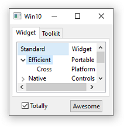
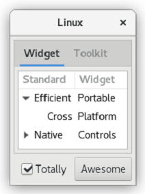
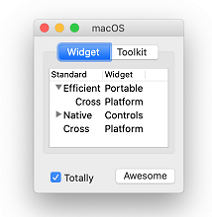

SWT: The Standard Widget Toolkit
SWT is an open source widget toolkit for Java designed to provide efficient, portable access to the user-interface facilities of the operating systems on which it is implemented.
Welcome
Welcome to SWT! You may have come to this page looking for snippets (little code examples) or examples (big code examples like ControlExample); widget snapshots or documentation. Whatever the reason, you will find many resources here. Enjoy!
Downloads
|
Latest Release
|
||||
|
Stable Builds
|
||||
|
Integration Builds
|
||||
|
Maven Artifacts
|
How to contribute
Articles
- How to develop SWT applications in Eclipse
- How to run the ControlExample and other SWT examples
- How to deploy SWT applications on Mac OS X
- How to generate the SWT JNI Code
- How to generate the SWT JNI Code for Cocoa
- Using OpenGL in SWT Applications
- Many more articles about SWT on Eclipse Corner at eclipse.org
- Full list of articles and documentation
Resources
- SWT wiki
- Widget screenshots with links to documentation
- Snippets, helpful little code examples
- Examples, helpful big code examples
- The SWT FAQ answers many common questions
- Tools and Plug-ins for SWT developers
- Online Javadoc
- Books and additional documentation
- Test Plan for SWT
- SWT Community Page
- SWTBot, UI/functional testing tool for SWT and Eclipse based applications.
- Eclipse/SWT Accessibility wiki
Contact Us
SWT development uses GitHub Discussions and GitHub Issues.
Contributions are welcome!